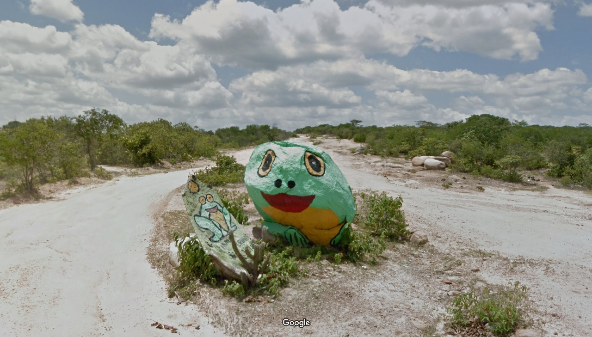

Street View cars take panoramic images of streets around the world, which, when stitched together, provide the software’s immersive digital landscape. The cars have nine camera lenses affixed to a pole on the car’s roof: the “Nine Eyes of Google Street View”, a term coined by artist
Jon Rafman.

Street View cars take panoramic images of streets around the world, which, when stitched together, provide the software’s immersive digital landscape. The cars have nine camera lenses affixed to a pole on the car’s roof: the “Nine Eyes of Google Street View”, a term coined by artist
Jon Rafman.

Journey
to the Centre of
Google Earth